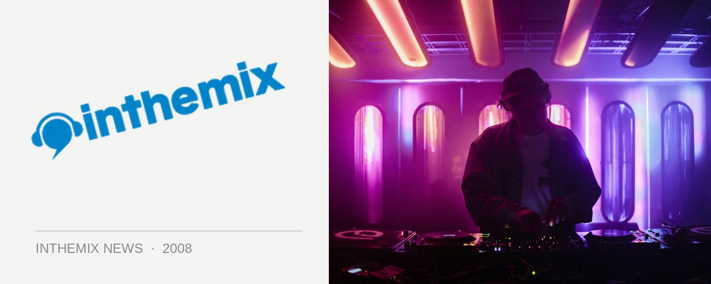

Australia gets its own Dance Music Hub
Is this Australia’s answer to Beatport? Whether or nor that’s the case, new kid on the digital downloads scene Dance Music Hub has launched itself as a force to be reckoned with on the international scene. It’s a music download site that aims to provide a platform for Australian labels and artists to find a global audience, and they’ve already recruited some of our country’s finest independent labels into the fold. Ministry of Sound, Onelove, Bandroom, Mixology Digital, BamBam Muzik and Mark Dynamix’s newly launched Long Distance Recordings are all among them, along with an appearance from Tiesto’s label Black Hole Recordings.
An extensive selection of new and classic releases is already available for purchase, and it covers all genres of dance including house, minimal, electro, urban, deep house, chill out and everything else you could care to name. And they’re an organisation that is committed to the possibilities of digital distribution: all music sold is completely DRM free, and can be downloaded to Windows or MAC and played on any device free of any restrictions.
Lee Michaels from Dance Music Hub says stands out from the competition by approaching digital downloading from a different angle: by dance music, for dance music. “We are not the first to market but we have a lot to offer which is unique. We have had a chance to suss out the wants and needs of the industry and deliver accordingly, from detailed featured artist sections to features that help users quickly and easily find the music that is right.”
Dance Music Hub are offering anyone who registers on the site before 31st August a chance to win 365 tracks of their choosing, plus a $5 credit after the first purchase. Check it out at dancemusichub.com.